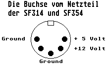

Previous
Next
TOC
Floppy-Disk (14-pin
DIN weiblich)
1 - Read Data
2 - Side 0 Select
3 - Ground
4 - Index Pulse
5 - Driveselect A
6 - Driveselect B
7 - Ground
8 - Motor On
9 - Direction
10 - Step
11 - Write Data
12 - Write Gate
13 - Track 00 Sense
14 - Write Protect
Pin 1 liegt mittig gegenüber der Aussparung
_
|_|
11 o
o 10
9 o
13 12
o 8
7 o
o
o
o 6
5 o
o
o 4
3 o
14 o 2
o
1
Die Buchsenbelegung der Atari Netzteile von den Diskettenstationen

Der anschluß eines externen Diskettenlaufwerkes
Der 34 polige Shugart-Bus
Der 26 polige Shugart-Bus
Kapitel Die Pinbelegung des ATARI Floppysteckers am Computer, Seite 1